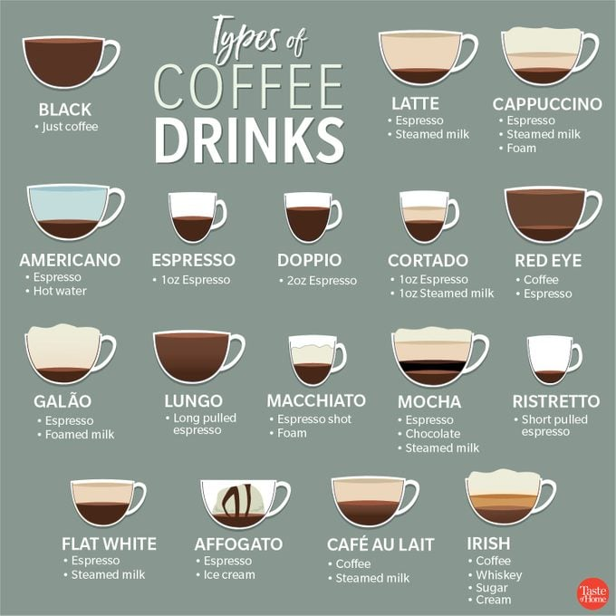
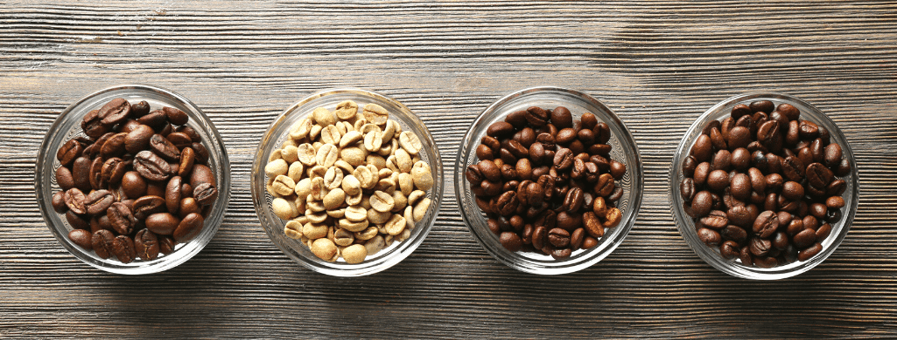
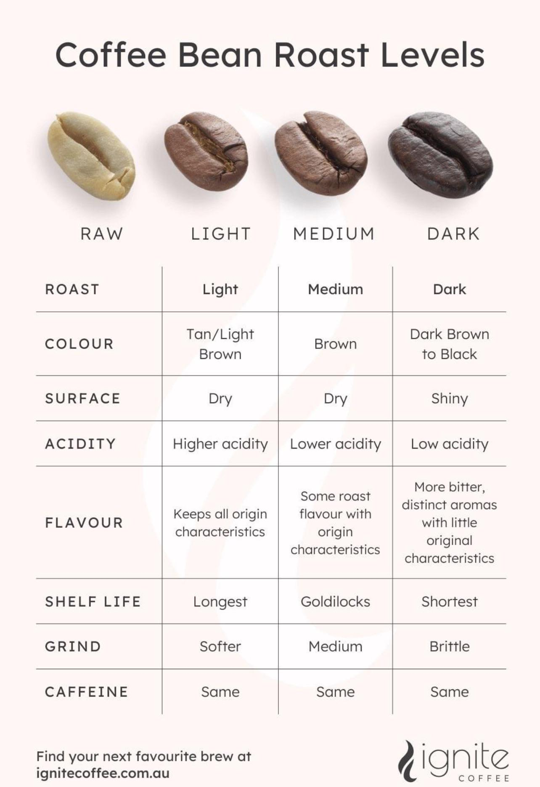

Coffee is one of the most beloved drinks in the world. There are so many types, most people haven't tried them all!
Look at the picture below, how many of these drinks have you tried?
Since the main ingredient of coffee drinks is the coffee bean, let's learn about the different types of coffee beans!
The following table shows the different types of beans with their flavor, growing conditions, and average caffeine content. Content from Coffi Dre.
| Coffee Type | Flavour Profile | Growing Conditions | Caffeine Content |
|---|---|---|---|
| Arabica (Coffea Arabica) | Mild, smooth and aromatic with fruity, floral, and nutty notes, such as berries, caramel, chocolate, and floral notes. Low acidity and a light aroma. | Grows best in higher altitudes (600–2,000 meters), requires moderate temperatures (15–24°C), and steady rainfall. | 1.2% – 1.5%. |
| Robusta (Coffea Canephora) | Strong, harsh, and bitter with a grainy or nutty aftertaste. Full-bodied taste. | Can grow at lower altitudes (200–800 meters), more resilient, tolerates higher temperatures (24–30°C), and less water. | 2.2% – 2.7%. |
| Liberica (Coffea Liberica) | Unique flavour with a jackfruit-like flavour. Full-bodied with fruity or floral undertones, | Thrives in low-altitude areas (0–800 meters), high humidity, warm temperatures (20–30°C), and requires ample rainfall. | 1.23% caffeine content, the lowest among the three types. |
| Excelsa (Coffea Excelsa) | Tart and fruity with a complex flavour profile, combining both light and dark roast characteristics. Wine-like and acidic. | Similar growing conditions to Liberia; large trees and specific environmental requirements. | The same average caffeine content as Liberica. |
The following graphic shows a comparison of different roast levels.
Image from Ignite Coffee.